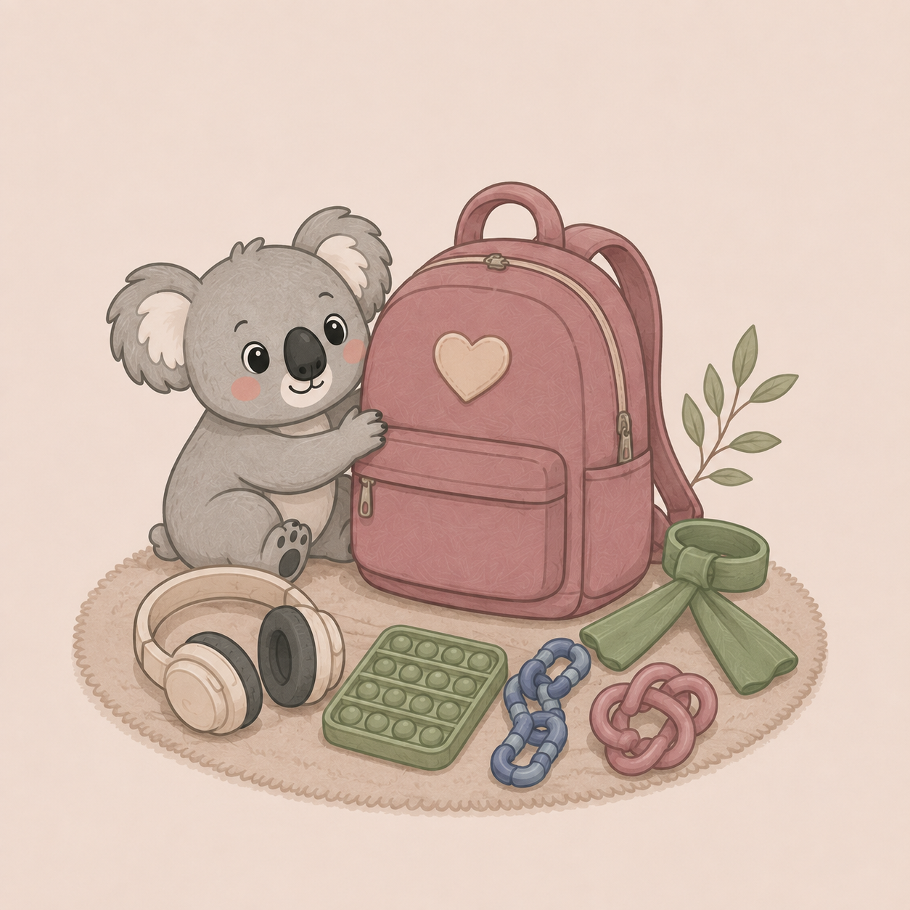
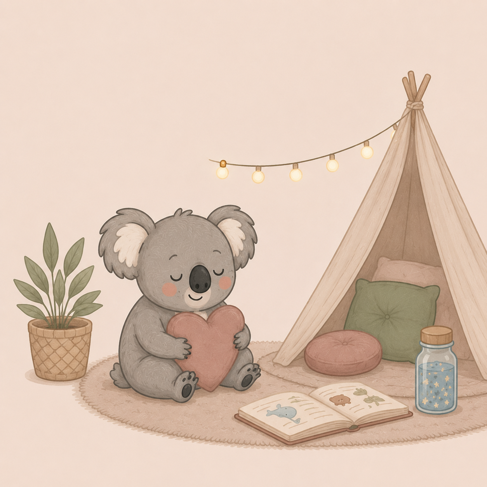
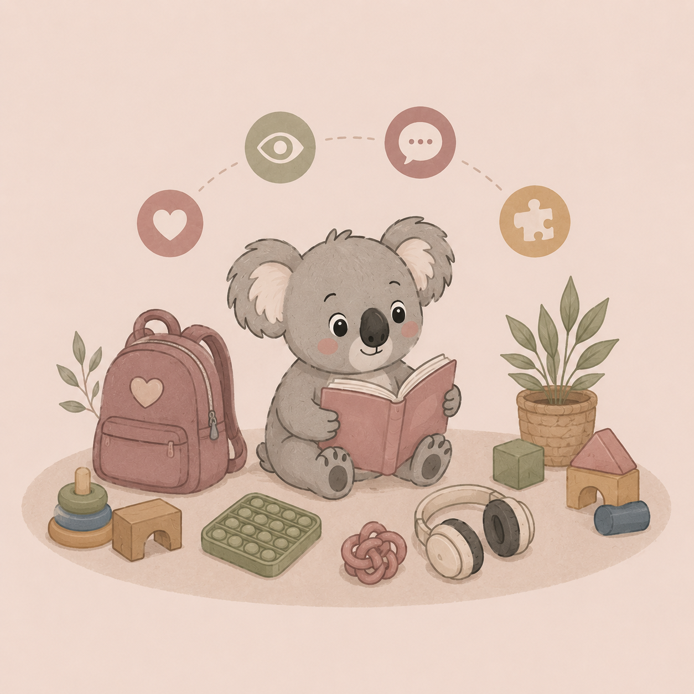

Respeto al ritmo
Sin presiones ni objetivos forzados. Cada intervención respeta los tiempos individuales de desarrollo, ofreciendo un espacio seguro donde avanzar paso a paso.
Aquí encontrarás información y herramientas para acompañar el desarrollo de los más pequeños.
(Asociación Española de Psicología Sanitaria)
¡Han añadido muchos nuevos cursos especializados!
Introduce tus datos a través de nuestro enlace exclusivo, escoge tu formación preferida entre su amplio catálogo y dispondrás de un año entero para completarlo a tu ritmo.
🎁 Ventaja exclusiva: Además del curso gratuito, en el momento de tu primera matrícula podrás añadir cualquier otro curso adicional por solo 20€ en lugar de su precio real habitual.
* La emisión del diploma oficial para tu currículum es opcional por solo 9€.
Sin presiones ni objetivos forzados. Cada intervención respeta los tiempos individuales de desarrollo, ofreciendo un espacio seguro donde avanzar paso a paso.
Herramientas de autorregulación en el aula: Elementos discretos diseñados para mitigar la sobrecarga y mejorar la concentración en clase.

Un espacio seguro de regulación emocional: Un rincón predecible y siempre disponible en el hogar para volver al equilibrio en momentos de desborde.

Conexión y comunicación natural: Herramienta idónea para interactuar, comprender y crear un vínculo afectivo sólido sin presiones.

Una guía orientativa para el crecimiento: Referencias útiles pero flexibles. Cada niño evoluciona a su propio ritmo requiriendo acompañamiento.
